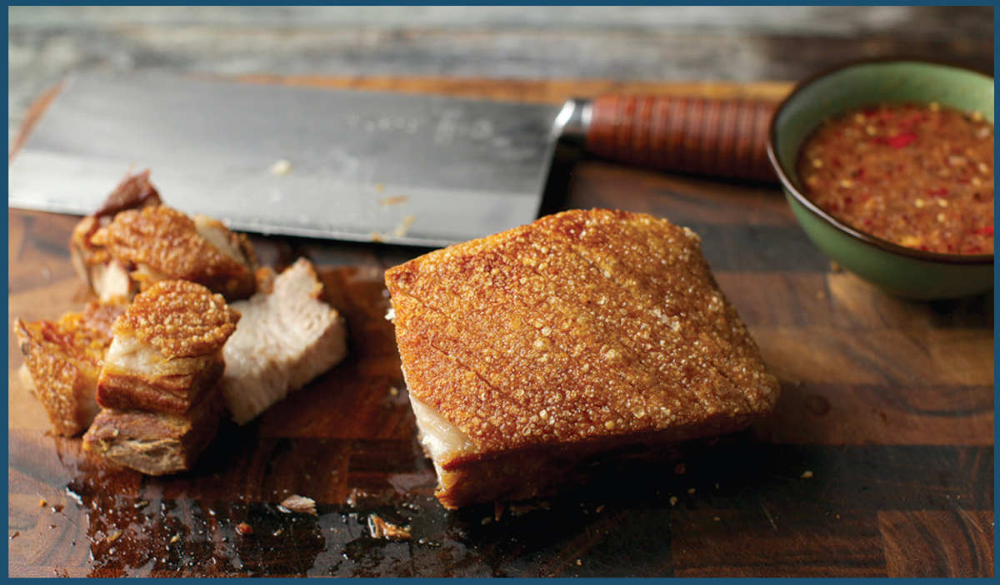
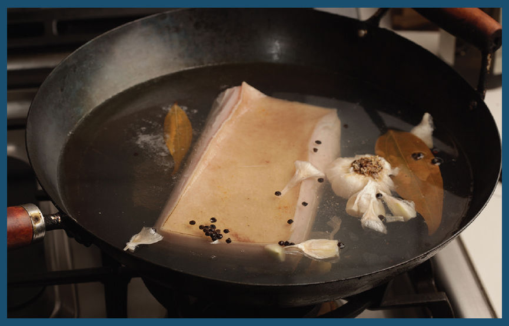
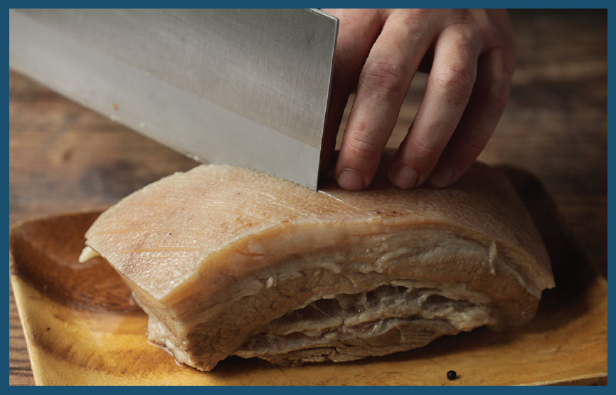
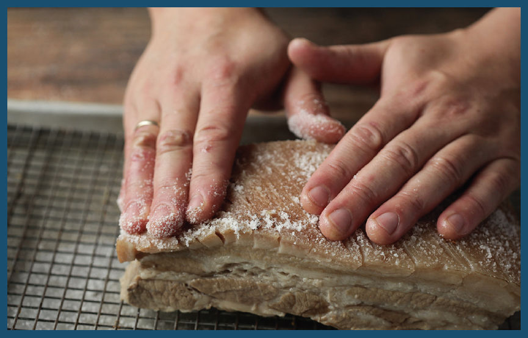
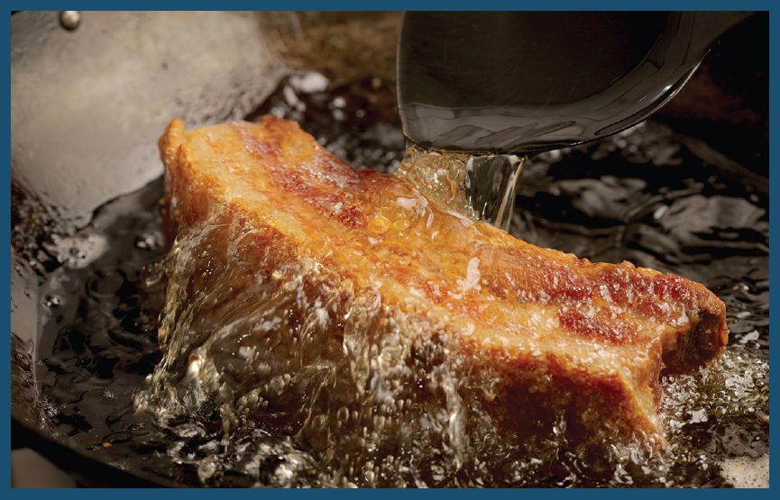

CRISPY FRIED PORK BELLY

One of the most glorious sights to behold at a Thai market is the mu krop vendor, with slabs of golden-brown pork belly. Order some belly and they’ll cut off a chunk with a cleaver, cracking through the thick, blistered surface and revealing pale white, tender, juicy meat and fat underneath. It’s a classic ingredient in dishes like pad khana mu krop (Stir-fried Chinese broccoli with pork belly, here). In the Philippines it’s known as lechon kawali (lechón is the Spanish word for “suckling pig,” while kawali is the Filipino word for “wok”) and comes served with a hot and vinegary dipping sauce, sometimes flavored with pork liver. In Adri’s native Colombia, it’s chicharrón, and in China a similar roasted version is sio bak. There’s a reason crispy pork belly is popular across multiple cultures around the world.
Why does pork skin puff and blister when you fry it? It’s all thanks to moisture within the rind that suddenly turns to steam, causing rapid expansion that puffs up the skin into bubbles that then dehydrate and set in the hot fat. But it’s not as simple as dropping a piece of pork belly into hot oil. Try that and you end up with pork rind that is impossibly tough and chewy.
You know how difficult it is to blow up a rubber balloon fresh from the package, but if you stretch it out with your hands a few times to loosen it up, it becomes much easier? We have to take the same approach with bubbles of pork skin, but rather than loosening it up by stretching it with our hands, we’ll loosen it up by par-cooking it, breaking down some of the tough connective tissue.

The first step is to simmer the pork belly in water spiked with vinegar and salt for an hour. This causes the meat to start constricting, which in turn pushes out impurities and gunk that would cause the fried belly to discolor and turn blotchy. The connective tissue will begin to soften at this stage, and some of the fat will begin to render as well. Finally, it tightens up its structure enough to allow you to score the rind, which allows the skin to expand more during its final puffing stage. For more flavor, you can add aromatics to the water at this stage, such as bay leaves, peppercorns, and garlic.

There are a few ways to score pork rind. If you’ve got a sharp knife and a bit of patience, you can cut a series of shallow parallel or cross-hatched lines into it, making sure to score only the topmost layer—if you score into the flesh, juices get pushed out during cooking that prevent the rind from crisping properly.
The other alternative is to use a sharp metal skewer or fork to repeatedly poke it (go for around fifteen to twenty holes per square inch of rind), or to use a jaccard—a tool made for tenderizing meat that consists of dozens of sharp skewers attached to a single handle (you can find them online for around $25). If you use any of these methods, the same caveat applies: be careful not to poke into the actual meat underneath the rind; a very light prick is all it needs.
Just like French fries, crispy pork belly benefits from double cooking (triple cooking if you count the initial boil): once at a relatively low temperature to break down the connective tissue further and begin to dehydrate the crust, then a rest at room temperature, followed by a second fry at a higher temperature. The problem is that during this first fry, your pork belly will still have pockets of moisture in the rind that can pop very explosively as pressure builds up from the conversion of water to steam. This can cause frightening and dangerous oil spatters.
To prevent this problem, I like to swap out that initial fry with a stay in the oven, roasting the pork belly at around 375°F (190°C) for 20 to 30 minutes to drive off excess moisture and prime the rind for the final puffing and crisping stage.

Once the pork belly has had a chance to cool, I carefully lower it into a wok with a few inches of hot oil, positioning the pork belly so that the rind is facing up and emerging from the oil a bit. This allows you to ladle hot fat over the top of the pork belly. As you do so, you’ll see an immediate and dramatic puffing of the skin as it forms thousands of microblisters, each one adding surface area and crunch. Leaving the pork belly rind up and emerging from the boil during this stage minimizes pressure on the rind, which is what allows the skin to puff so dramatically.

Once the rind has fully puffed, you can carefully turn it over so the rind is submerged in the oil, allowing it to finish crisping and browning.
Take the pork belly out and let it rest on a rack for a few moments to cool, then scrape a knife across its surface and marvel at the crispy, bubbly skin you’ve just created. Surely such an accomplishment deserves some kind of reward. Luckily, this is the kind of accomplishment that has the reward built right in.